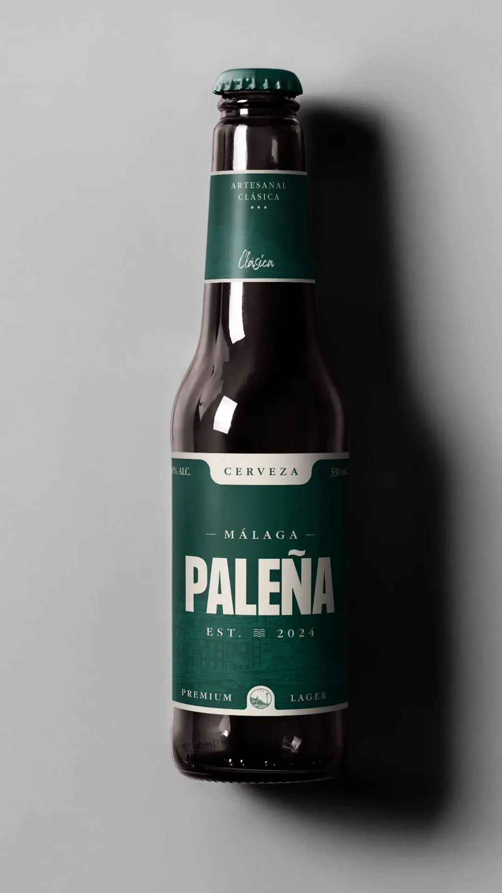
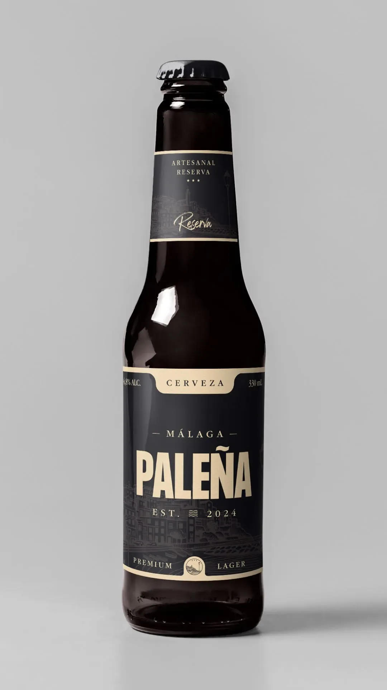
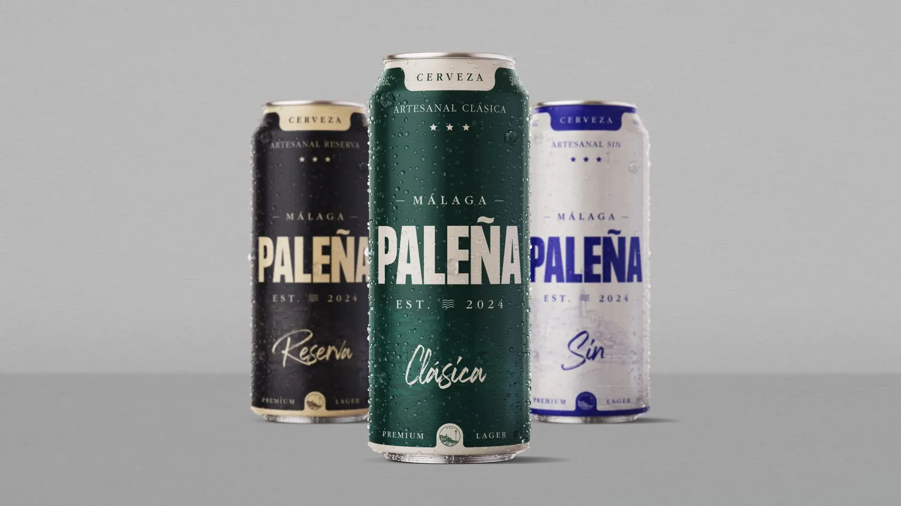
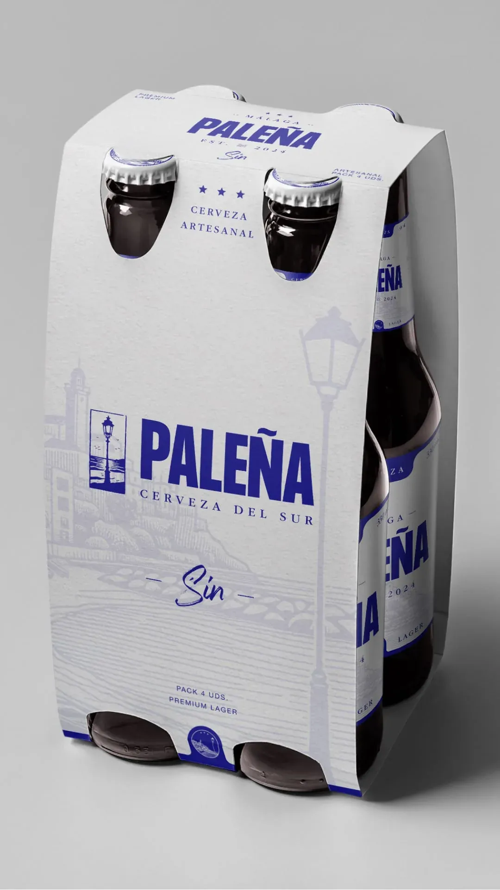
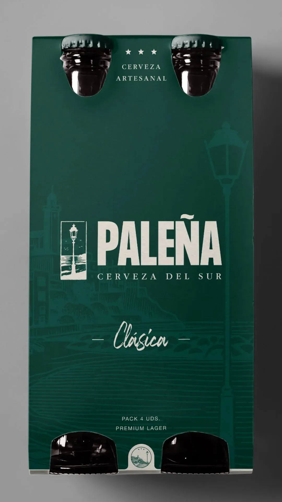
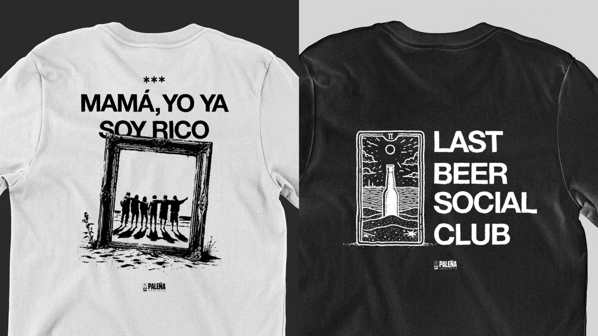

Cerveza Paleña
La Paleña es el resultado de transformar una emoción local en una identidad visual con
presencia real. Inspirada en el barrio malagueño de El Palo, la marca nace desde algo muy
humano: una tarde cualquiera que se convierte en recuerdo. No parte de una estrategia fría,
parte de una sensación. Y el reto fue precisamente ese: traducir esa espontaneidad en un
sistema
visual coherente, contemporáneo y con carácter propio.
El proyecto construye una identidad minimalista pero con intención, donde cada decisión
gráfica
responde a una narrativa clara: representar la cultura del sur sin caer en clichés. El
equilibrio entre modernidad y raíz local fue clave. No se trataba de diseñar solo una
etiqueta,
sino de crear una marca que respirara comunidad, cercanía y disfrute compartido. Una cerveza
que
no se vende desde la pretensión, sino desde la pertenencia.
La dirección visual apuesta por una estética limpia, directa y reconocible, capaz de
funcionar
tanto en el packaging como en cualquier punto de contacto con el usuario. La Paleña no
comunica
solo producto, comunica momento. Comunica esa sensación de estar donde quieres estar, con
quien
quieres estar. Y ahí es donde el diseño deja de ser decoración para convertirse en
identidad.
Este proyecto demuestra mi capacidad para construir marcas desde la emoción sin perder rigor
estratégico. Traducir territorio en sistema visual, cultura en lenguaje gráfico y
experiencia en
marca. Porque cuando el diseño conecta con algo real, deja de verse como diseño y empieza a
sentirse como verdad.





